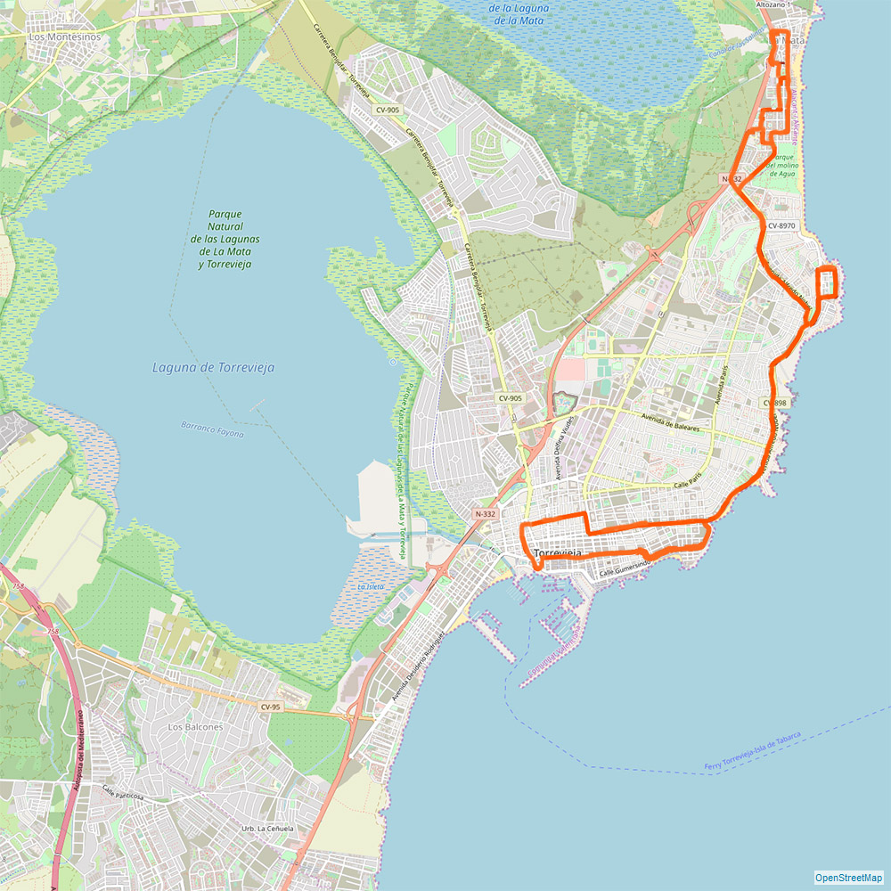
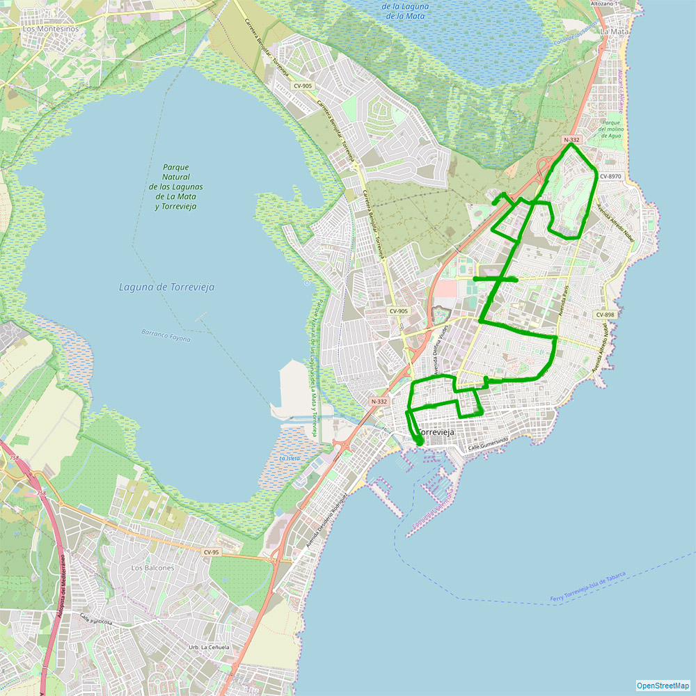

Se puede llegar a Alicante desde los aeropuertos siguientes (entre otros):
Desde el aeropuerto de Alicante se puede llegar en taxi (cuesta más o menos 50 €).
En Torrevieja y sus alrededores se puede viajar en bicicleta alquilada (también en una eléctrica). He aquí unas direcciones de alquiler de bicicletas:
Calle los Portalicos, 7, , Av. Dr. Gregorio Marañón, 43, Real Club Nautico, Paseo Vistalegre, 2A
Amsterdam, Antwerp, Asturias, Barcelona, Bergen, Basel, Switzerland / Mulhouse, Belfast, Berlin, Bilbao, Billund, Bournemouth, Bimingham, Bremen, Bristol, Brussels, Bucharest, Cardiff, Cluj-Napoca, Cologne, Copenhagen, Cork, Doncaster, Dublin, Dusseldorf, Edinburgh, Eindhoven, Exeter, Frankfurt, Gdansk, Geneva, Glasgow, Gothenburg, Hamburg, Helsinki, Haugesund, Ibiza, Karlsruhe/Baden Baden, Kaunas, Kiev, Kraków, Leeds, Leicestershire, Liege, Lisbon, Liverpool, London, Maastricht, Madrid, Manchester, Marseille, Milan, Modlin, Moscow, Munich Newcastle, Oslo, Ostend, Palma Mallorca, Paris, Porto, Poznan, Reykjavik, Rome, Rotterdam, Sandefjord, Santiago De Compostela, Sevilla, Shannon, Southend, Stavanger, Stockholm, Stuttgart, Trondheim, Vienna, Warszawa, Wrocław.
Desde el aeropuerto de Alicante cada 2 horas sale un autobus al centro de Torrevieja. Seguidamente un autobus urbano llega casi al apartamento mismo.Desde el aeropuerto de Alicante se puede llegar en taxi (cuesta más o menos 50 €).
En Torrevieja y sus alrededores se puede viajar en bicicleta alquilada (también en una eléctrica). He aquí unas direcciones de alquiler de bicicletas:
Calle los Portalicos, 7, , Av. Dr. Gregorio Marañón, 43, Real Club Nautico, Paseo Vistalegre, 2A

Ruta B Torrevieja – Torretas
Octubre a mayo: desde lunes a viernes cada 35 minutos (07:30 hasta 22:00)
Octubre a mayo: desde lunes a viernes cada 35 minutos (07:30 hasta 22:00)
fines de semana y días festivos cada 65 minutos (07:30 hasta 22:00)
Junio a setiembre: cada día cada 40 minutos (07:30 hasta 23:00)

Ruta A Torrevieja – La Mata (Avda. París)
Octubre a mayo: desde lunes a viernes cada 30 minutos (07:30 hasta 22:00)
Octubre a mayo: desde lunes a viernes cada 30 minutos (07:30 hasta 22:00)
fines de semana y días festivos cada 40 minutos (07:30 hasta 22:00)
Julio y agosto: cada día cada 15 minutos (07:30 hasta 23:00)
Junio a setiembre: cada día cada 30 minutos (07:30 hasta 23:00)

Ruta C Torrevieja – Lomas
Octubre a mayo: desde lunes a viernes cada 35 minutos (07:30 hasta 22:00)
Octubre a mayo: desde lunes a viernes cada 35 minutos (07:30 hasta 22:00)
fines de semana y días festivos cada 65 minutos (07:30 hasta 22:00)
Junio a setiembre: cada día cada 40 minutos (07:30 hasta 23:00)

Ruta D-F Torrevieja – Los Altos – Rocio del Mar
Octubre a mayo: desde lunes a viernes cada 35 minutos (07:30 hasta 22:00)
Octubre a mayo: desde lunes a viernes cada 35 minutos (07:30 hasta 22:00)
fines de semana y días festivos cada 65 minutos (07:30 hasta 22:00)
Junio a setiembre: cada día cada 40 minutos (07:30 hasta 23:00)

Ruta E Torrevieja – Los Balcones – Lago Jardín
Octubre a mayo: desde lunes a viernes cada 35 minutos (07:30 hasta 22:00)
Octubre a mayo: desde lunes a viernes cada 35 minutos (07:30 hasta 22:00)
fines de semana y días festivos cada 75 minutos (07:30 hasta 22:00)
Junio a setiembre: cada día cada 35 minutos (07:30 hasta 23:00)

Ruta G Torrevieja – San Luís
Octubre a mayo: desde lunes a viernes cada 35 minutos (07:30 hasta 22:00)